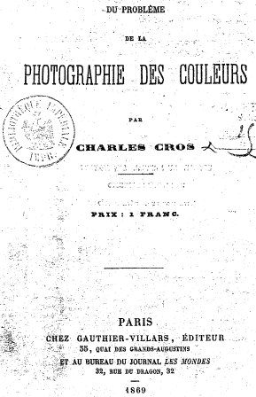

EPITRE DU FEU PHILOSOPHIQUE
De Lapide Philosophico, in Theatrum Chemicum (1614 T. III) revu le 5 janvier 2002
Nous avons parlé de ce texte important dans les Principes ; il est plusieurs fois cité par Fulcanelli et E. Canseliet ; d'abord dans le Mystère des Cathédrales, p. 106, où Fulcanelli aborde l'étude du feu secret : Ce feu, ou cette eau ardente, est l'étincelle vitale communiquée par le Créateur à la matière inerte; c'est l'esprit enclos dans les choses, le rayon igné, impérissable, enfermé au fond de l'obscure substance, informe et frigide. Nous touchons ici au plus haut secret de l'Oeuvre ; et nous serions heureux de trancher ce noeud gordien en faveur des aspirants à notre Science, - nous souvenant, hélas! que nous fûmes arrêté nous-même par cette difficulté pendant plus de vingt ans, - s'il nous était permis de profaner un mystère dont la révélation dépend du Père des Lumières. A notre grand regret, nous ne pouvons faire plus que signaler l'écueil et conseiller, avec les plus éminents philosophes, la lecture attentive d'Artephius, de Pontanus et du petit ouvrage intitulé: Epistola de Igne Philosophorum. On y trouvera de précieuses indications sur la nature et les caractéristiques de ce feu aqueux ou de cette eau ignée, enseignements que l'on pourra compléter par les deux textes suivants. L'auteur anonyme des Préceptes du Père Abraham dit:Fulcanelli revient sur le texte de Pontanus, p. 205, lorsqu'il évoque le vase de nature sur la nature duquel les Adeptes se sont montrés si réservés ou si envieux :« Il faut tirer cette eau primitive et céleste du corps où elle est, et qui s'exprime par sept lettres selon nous, signifiant la semence première de tous les êtres, et non spécifiée ni déterminée dans la maison d'Ariès pour engendrer son fils. C'est à cette eau que les Philosophes ont donné tant de noms, et c'est le dissolvant universel, la vie et la santé de toute chose...»
Nous affirmons [...] qu'il sera imposible d'obtenir le moindre succès dans l'Oeuvre si l'on n'a pas une connaissance parfaite de ce qu'est le Vase des Philosophes ni de quelle manière il faut le fabriquer. Pontanus avoue qu'avant de connaître ce vaisseau secret il avait recommencé, sans succès, plus de deux cents fois le même travail, quoiqu'i besognât sur les matières propres et convenables, et selon la méthode régulière.Comme d'habitude avec Fulcanelli, il convient de montrer de la prudence dans ces phrases qui semblent anodines et qui, au vrai, sont entièrement cabalistiques ; Fulcanelli affirme que « l'on peut avoir foi en notre sincérité » ; cela peut s'entendre d'abord fidèlement, ou encore en prenant le sens inverse [un mensonge complet] et on peut aussi décomposer la phrase en tirant le mot foi [qui renvoie à Dieu, qeioV, et donc au soufre, qeion] et le mot sincérité [verus] qui signifie aussi : « ce qui est conforme à la vérité morale », c'est-à-dire juste, renvoyant à l'une des quatre Vertus que nous avons examiné dans la section des Gardes du corps de François II. Dans les Demeures Philosophales, p. 74, c'est à nouveau pour nous parler du feu secret que Fulcanelli revient sur Pontanus :C'est là une question qu'aucun philosophe n'a voulu résoudre, même en réclamant le secours de l'allégorie. Artéphius et Pontanus en parlent si obscurément que cette chose importante reste incompréhensible ou passe inaperçue.Et un peu plus loin, p. 76 :Pontanus affirme que toutes les superfluités de la pierre se convertissent, sous l'action du feu, en une essence unique, et qu'en conséquence celui qui prétend en séparer la moindre chose n'entend rien à notre philosophie.Il s'agit ici, non point de la pierre philosophale, mais de la pierre des philosophes, autrement dit de ce limon, de cette boue qui est nécessaire pour activer la première roue du Char Triomphal de B. Valentin. Cette substance [qui est à la fois pierre et non pierre comme l'affirme Le Cosmopolite] doit subir une séparation préalable semblable à celle que nous évoquons dans la section du tartre vitriolé.
E. Canseliet, dans son Alchimie expliquée sur ses Textes classiques revient sur Pontanus dans le chapitre sur la Grande coction, p. 283 :"Artephius et Jean Pontanus sont faciles à consulter [...] plus que Morien, en sa Disposition des sages -Dispositio Sapientum- d'où nous tirons l'indication de la parfaite identité qui lie le four avec le feu, lorsqu'ils sont dits philosophiques..."
Dans la même page, E. Canseliet déclare aussi :
"L'étudiant sait maintenant que l'or des sages ne peut être l'or métallique [...] Rien, dans ce sens, ne peut plus venir de lui, si ce n'est que la Médecine Universelle le transforme, par projection, en Pierre transmutatoire qui agit sur les métaux inférieurs, les gemmes et les pierres précieuses."
Par là est clairement affirmé que la « médecine transmutatoire » possède une action sur les pierres précieuses ; s'il en était besoin, nous ajouterions qu'E. Canseliet s'est exprimé dans ses Etudes de symbolisme sur le même sujet :
"Ainsi sait-on beaucoup moins que Charles Cros est le créateur du monologue passé en morceau comique et de société, plutôt que l'inventeur de la fabrication artificielle des gemmes, de la photographie en couleurs..." [in Alchimie, De Cyrano Bergerac, p. 363]

FIGURE I
(frontispice de l'ouvrage de Charles Cros)Ce texte parle donc du feu secret, encore appelé dissolvant universel ou Lion vert ; on l'appelle aussi feu aqueux ou eau sèche « qui ne mouille point les mains ». Il permet de préparer puis de « gouverner » l'humide radical métallique des anciens alchimistes.
Moi, Jean Pontanus, qui suis allé en plusieurs régions et royaumes - afin de connaître certainement ce que c'est que la Pierre des Philosophes-, après avoir parcouru tous les côtés du monde, je n'ai trouvé que des faux Philosophes et des trompeurs. Néanmoins, étudiant toujours dans les livres des Sages, et mes doutes s'augmentant, j'ai trouvé la vérité ; mais nonobstant que j'eusse la connaissance de la matière, j'ai erré deux cents fois avant que de trouver l'opération et pratique de cette vraie matière.
Premièrement, j'ai commencé mes opérations par les putréfactions du Corps de cette matière, pendant neuf mois, et je n'ai rien trouvé. Je l'ai mise au bain-marie pendant quelques temps, et j'ai semblablement erré. Je l'ai tenue et posée dans un feu de calcination pendant trois [initiale de l'un des composés du Lion vert] mois, et j'ai mal opéré. Tous les genres et manières de distillations et sublimations, comme disent ou semblent dire les Philosophes - tel Géber, Archélaüs et presque tous les autres - je les ai tentés et essayés, et n'ai pareillement rien trouvé. Enfin, j'ai tâché de parvenir et parfaire le sujet de tout l'Art d'Alchimie, de toutes les manières imaginables, qui se font par le fumier, le bain, les cendres, [ce passage fait référence au salpêtre des sages et aux chaux métalliques] et par mille autres genres de feux, dont les Philosophes font mention dans leurs livres; mais je n'ai rien découvert de bon.
C'est pourquoi, je me mis pendant trois ans continuels à étudier les livres des Philosophes, entre autres le seul Hermès, les brèves paroles duquel comprennent tout le magistère de la Pierre ; quoi qu'il parle assez obscurément des choses supérieures et inférieures, du Ciel et de la Terre.
Toute notre application et notre soin, donc, ne doit être qu'à la connaissance de la vraie pratique, dans le premier, le second, et le troisième oeuvre. Ce n'est point le feu de bain, de fumier, ni de cendres, ni aucun de tous les autres feux que nous chantent les Philosophes, et nous décrivent dans leurs livres.
Qu'est-ce donc que ce feu qui parfait et achève tout l'oeuvre, depuis le commencement jusqu'à la fin ? Certainement tous les Philosophes l'ont caché; mais, pour moi, touché d'un mouvement de pitié, [en grec eleoV, proche de eleouV : Chersonèse de Thrace, près du Pont ; y aurait-il un rapport avec la pierre noire de Pessinonte ?] je le veux déclarer avec l'entier accomplissement de tout l'oeuvre.
La Pierre des Philosophes est unique, et une, mais cachée et enveloppée en la multiplicité de différents noms, et avant que tu la puisses connaître tu te donneras bien de la peine ; difficilement la trouveras-tu de ton propre génie. Elle est aqueuse, aérienne, ignée, terrestre, flegmatique, colérique, sanguineuse et mélancolique. Elle est un soufre et pareillement Argent vif.
Elle a plusieurs superfluités, qui, je t'assure par Dieu vivant, se convertissent en vraie et unique Essence, moyennant notre feu. Et celui qui sépare quelque chose du sujet - croyant cela nécessaire-, ne connaît assurément rien à la Philosophie. Car le superflu, le sale, l'immonde, le vilain, le bourbeux, et, généralement toute la substance du sujet, se parfait en corps spirituel fixe, par le moyen de notre feu. Ce que les Sages n'ont jamais révélé, et, fait que peu de gens parviennent à cet Art ; s'imaginant que quelque chose de sale et de vilain doit être séparé.
Maintenant il faut faire paraître, et tirer dehors les propriétés de notre feu ; s'il convient à notre matière selon la manière dont j'ai parlé, c'est-à-dire s'il est transmué avec la matière. Ce feu ne brûle point la matière, il ne sépare rien de la matière, ne divise ni n'écarte les parties pures des impures, ainsi que disent tous les Philosophes, mais convertit tout le sujet en pureté. Il ne sublime pas comme Géber fait les sublimations, et Arnaud pareillement, et tous les autres qui ont parlé des sublimations et distillations. Il se fait et parfait en peu de temps.
Ce feu est minéral, égal et continuel, il ne s'évapore point, si ce n'est qu'il soit trop excité ; il participe du soufre, il est pris et provient d'ailleurs que de la matière. Il rompt, dissout, et congèle toutes choses, et semblablement congèle et calcine; il est difficile à trouver par l'industrie et par l'Art. Ce feu est l'abrégé et le raccourci de tout l'oeuvre, sans prendre autre chose, du moins peu, et ce même feu s'introduit et est de médiocre ignition; parce qu'avec ce petit feu tout l'oeuvre est parfait, et sont faites, ensemble, toutes les requises et dues sublimations.
Ceux qui liront Géber et tous les autres Philosophes, quand ils vivraient cent millions d'années, ne le sauront comprendre ; car ce feu ne se peut découvrir que par la seule et profonde méditation de la pensée, ensuite on le comprendra dans les livres, et non autrement. L'erreur en cet Art, ne consiste qu'en l'acquisition de ce feu, qui convertit la matière en la Pierre des Philosophes.
Etudies-toi donc à ce feu, parce que si moi-même je l'eus premièrement trouvé, je n'eus pas erré deux cents fois sur la propre matière. A cause de quoi je ne m'étonne plus si tant de gens ne peuvent parvenir à l'accomplissement de l'oeuvre.
Ils errent, ont erré et erreront toujours, en ce que les Philosophes n'ont mis leur propre agent qu'en une chose, qu'Artéphius a nommée, mais il n'a parlé que pour lui. Si ce n'est que j'ai lu Artéphius, que je l'ai entendu et compris, jamais je ne serais parvenu à l'accomplissement de l'oeuvre.
Voici quelle est cette pratique : il faut prendre la matière avec toute diligence, la broyer physiquement et la mettre dans le feu, c'est-à-dire dans le fourneau; mais il faut aussi connaître le degré et la proportion du feu. A savoir, il faut que le feu externe excite tant seulement la matière ; et, en peu de temps ce feu, sans y mettre les mains en aucune manière, accomplira assurément tout l'oeuvre. Parce qu'il putréfie, corrompt, engendre et parfaira tout l'ouvrage, faisant paraître les trois principales couleurs, la noire, la blanche, la rouge. Et moyennant notre feu la médecine se multipliera si elle est conjointe à la matière crue, non seulement en quantité mais aussi en vertu.
Recherches donc de toutes les forces de ton esprit ce feu, et tu parviendras au but que tu t'es proposé ; car c'est lui qui fait tout l'oeuvre, et il est la clef de tous les Philosophes, laquelle ils n'ont jamais révélée dans leurs livres. Si tu penses bien profondément aux propriétés du feu ci-dessus, tu la connaîtras, mais non autrement.
Donc, touché d'un mouvement de pitié, j'ai écrit ceci ; mais, et afin que je me satisfasse, le feu n'est point transmué avec la matière, comme je l'ai dit ci-dessus. J'ai bien voulu le dire et en avertir les prudents de ces choses, pour qu'ils ne dépensent pas inutilement leur argent, mais qu'ils sachent auparavant ce qu'ils doivent chercher, et, par ce moyen, parviendront à la vérité de l'Art; non pas autrement.
à Dieu.